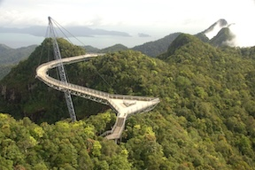
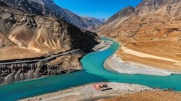
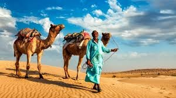
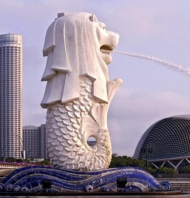

Langkawi, officially known by its sobriquet Langkawi, the Jewel of Kedah, is a duty-free island and an archipelago of 99 islands located some 30 km off the coast of northwestern Malaysia and a few kilometres south of Ko Tarutao, adjacent to the Thai border.
Langkawi, officially known by its sobriquet Langkawi, the Jewel of Kedah, is a duty-free island and an archipelago of 99 islands located some 30 km off the coast of northwestern Malaysia and a few kilometres south of Ko Tarutao, adjacent to the Thai border.
Rajasthan attracts tourists for its historical forts, palaces, art and culture with its slogan "Padharo Mhare Desh (Welcome to my land.)" The capital city, Jaipur, also known as Pink City, is a very popular tourist destination and is a part of the Golden Triangle.
Aside from its postcard-worthy attractions, Singapore is famous for its melting pot of food hubs, tidiness, and shopping centres. Dazzling skyscrapers decorate the skyline, which can be enjoyed by upscale restaurants and bars overlooking the city.
